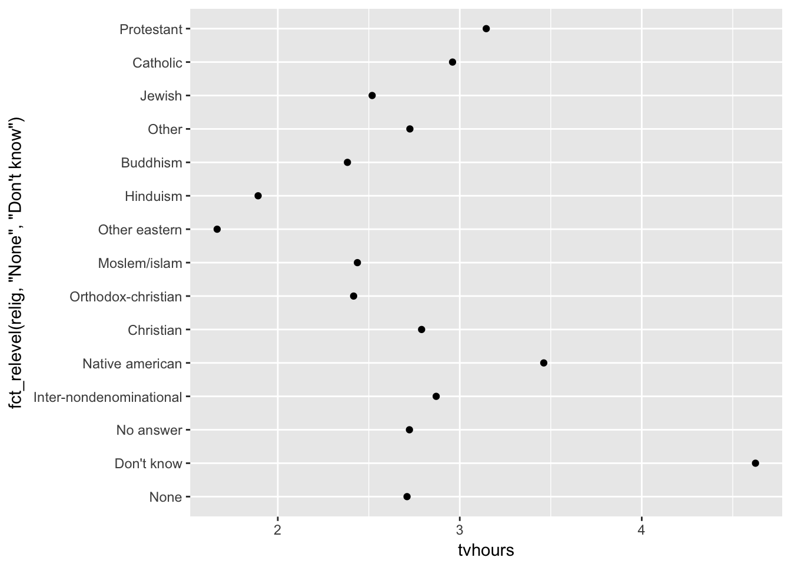

5 R on kalkulaator
Selleks, et R aru saaks, et tegu on temale mõeldud käsu, aga mitte tavatekstiga, Rmarkdown failis, tuleb see R koodirida spetsiaalsesse ümbrisesse või koodialasse (i.k. chunk) pakendada. Uue koodiümbrise saad sisestada koodieditori servast “Insert” > “R” abil. Sisetatud R kood evalueeritakse siis, kui vajutad tekinud hallis koodialas rohelisele nupule või alternatiivselt, kui soovid jooksutada ainult osa koodi või üht koodirida, siis pane kursor soovitud reale või võta osa koodi blokki ja vajuta klaviatuuril cmd + enter.
Liidame 2 + 2.
2 + 2## [1] 4Nüüd trükiti see vastus konsooli kujul [1] 4. See tähendab, et 2 + 2 = 4.
Kontrollime seda:
answer <- 2 + 2 == 4
## Trükime vastuse välja
answer## [1] TRUEVastus on TRUE, (logical).
Pane tähele, et aritmeetiline võrdusmärk on == (sest = tähendab hoopis väärtuse määramist objektile/argumendile).
Veel mõned näidisarvutused:
# 3 astmes 2
3 ** 2
# Ruutjuur 3st
sqrt(3)
# Naturaallogaritm sajast
log(100)Arvule \(\pi\) on määratud oma objekt pi. Seega on soovitav enda poolt loodavatele objektidele mitte panna nimeks “pi”.
# Ümarda pi neljale komakohale
round(pi, 4)## [1] 3.1416Ümardamine on oluline tulemuste väljaprintimisel.
5.1 R objektid
R-i töökeskkonnas “workspace” asuvad objektid, millega me töötame. Tüüpilised objektid on:
- Andmekogud (vektorid, tabelid, maatriksid, listid jm).
- Statistiliste analüüside väljundid.
- Funktsioonid, mille oleme ise sisse lugenud.
Käsk ls() annab objektide nimed teie workspace-s:
ls()## [1] "answer"rm(a) removes object a from the workspace
Selleks, et salvestada töökeskkond faili kasuta “Save” nuppu “Environment” akna servast või menüüst “Session” -> “Save Workspace As”.
5.1.1 Objekt ja nimi
kui teil sünnib laps, annate talle nime.
R-s on vastupidi: nimele antakse objekt
babe <- "beebi"
babe## [1] "beebi"Siin on kõigepealt nimi (babe), siis assingmenti sümbol <- ja lõpuks objekt, mis on nimele antud (string “beebi”).
NB! stringid on jutumärkides, nimed mitte
nimi üksi evalueeritakse kui “print object”, mis antud juhul on string “beebi”
Nüüd muudame objekti nime taga
babe <- c("saatan", "inglike")
babe## [1] "saatan" "inglike"Tulemuseks on sama nimi, mis tähistab nüüd midagi muud (vektorit, mis koosneb 2st stringist). Objekt “beebi” kaotas oma nime ja on nüüd workspacest kadunud.
class(babe)## [1] "character"class() annab meile objekti tüübi. Antud juhul character vector.
Ainult need objektid, mis on assigneeritud nimele, lähevad workspace ja on sellistena kasutatvad edasises analüüsis.
apples <- 2
bananas <- 3
apples + bananas## [1] 5objekt 5 ei ole nimetatud, seega ei ilmu see ka workspace
a <- 2
b <- 3
a <- a+b
str(a) #objekti nimega a struktuur## num 5Nüüd on nimega a seostatud uus objekt, mis koosneb numbrist 5 (olles ühe elemendiga vektor). Ja nimega a eelnevalt seostatud objekt, mis koosnes numbrist 2, on workspacest lahkunud.
5.1.1.1 Nimede vorm
Nimed algavad tähemärgiga, mitte numbriga ega $€%&/?~ˇöõüä
Nimed ei sisalda tühikuid
Tühiku asemel kasuta alakriipsu: näiteks eriti_pikk_nimi
SUURED ja väiksed tähed on nimes erinevad
Nimed peaksid kirjeldama objekti, mis on sellele nimele assigneeritud ja nad võivad olla pikad sest TAB klahv annab meile auto-complete.
alt + - on otsetee <- jaoks
5.1.1.2 Sama koodi saab kirjutada neljal viisil
Hargnevate teede aed: kui me muudame olemasolevat objekti on meil alati kaks valikut. Me kas jätame muudetud objektile vana objekti nime või me anname talle uue nime. Esimesel juhul läheb vana muutmata objekt workspacest kaduma aga nimesid ei tule juurde ja säilib teatud workflow sujuvus. Teisel juhul jäävad analüüsi vaheobjektid meile alles ja nende juurde saab alati tagasi tulla. Samas tekkib meile palju sarnaste nimedega objekte.
Esimnene võimalus
a <- c(2, 3)
a <- sum(a)
a <- sqrt(a)
a <- round(a, 2)
a## [1] 2.24Teine võimalus
a <- c(2, 3)
a1 <- sum(a)
a2 <- sqrt(a1)
a3 <- round(a2, 2)
a3## [1] 2.24Kolmas võimalus on lühem variant esimesest. Me nimelt ühendame etapid toru %>% kaudu. Siin me võtame objekti a (nö. andmed), suuname selle funktsiooni sum(), võtame selle funktsiooni väljundi ja suuname selle omakorda funktsiooni sqrt(). Seejärel võtame selle funktsiooni outputi ja määrame selle nimele “result” (aga võime selle ka mõne teise nimega siduda). Kui mõni funktsioon võtab ainult ühe parameetri, mille me talle toru kaudu sisse sõõdame, siis pole selle funktsiooni taga isegi sulge vaja. NB! R hea stiili juhised soovitavad siiski ka sellisel juhul kasutada funktsiooni koos sulgudega! See on hea lühike ja inimloetav viis koodi kirjutada, mis on masina jaoks identne esimese koodiga.
## we need piping operator '%>%' from magrittr
library(magrittr)##
## Attaching package: 'magrittr'## The following object is masked from 'package:tidyr':
##
## extracta <- c(2, 3)
result <- a %>% sum() %>% sqrt() %>% round(2)
result## [1] 2.24Neljas võimalus: Kõrgharitud programmeerija kirjutaks selle koodi aga nii:
a <- c(2, 3)
a <- round(sqrt(sum(a)), 2)
a## [1] 2.24Sellist koodi loetakse keskelt väljappoole ja kirjutattakse alates viimasest operatsioonist, mida soovitakse, et kood teeks. Masina jaoks pole vahet. Inimese jaoks on küll: 4. variant nõuab hästi pestud ajusid.
Koodi lühidus 4 –> 3 –> 1 –> 2 (pikem)
lollikindlus 1 –> 2 –> 3 –> 4 (vähem lollikindel)
Mida vähem on kohti, kus saab koodi töötamist kontrollida, seda halvem teile. Sellepärast ärge kunagi pange üksteise otsa rohkem kui 4 torujuppi. See on teie otsustada, millist koodivormi te millal kasutate, aga te peaksite oskama lugeda neid kõiki.
5.2 Objektide tüübid
5.2.1 Vektor - andmerida
Vektor on rida kindlas järjekorras arve, tähemärke või TRUE/FALSE loogilisi väärtusi. Iga vektor sisaldab ainult ühte tüüpi andmeid. Vektor on elementaarüksus, millega me teeme tehteid. Andmetabelis ripuvad kõrvuti ühepikad vektorid (üks vektor = üks tulp) ja R-le meeldib arvutada vektori kaupa vasakult paremale (mis tabelis on ülevalt alla sest vektori algus on üleval tabeli headeri juures). Vektori loomiseks kasuta funktsiooni c() — combine
minu_vektor <- c(1, 3, 4)
str(minu_vektor)## num [1:3] 1 3 4minu_vektor <- c(1, NA, 4)
minu_vektor## [1] 1 NA 4class(minu_vektor)## [1] "numeric"minu_vektor <- c(1, "A1", "4$", "joe")
minu_vektor## [1] "1" "A1" "4$" "joe"class(minu_vektor)## [1] "character"Piisab ühest tõrvatilgast meepotis, et teie vektor ei sisaldaks enam numbreid.
Järgneva trikiga saab mitte-numbrilisest vektorist numbrilise vektori.
library(readr)
minu_vektor <- as.vector(parse_number(minu_vektor))## Warning: 1 parsing failure.
## row # A tibble: 1 x 4 col row col expected actual expected <int> <int> <chr> <chr> actual 1 4 NA a number joeminu_vektor## [1] 1 1 4 NAstr(minu_vektor)## num [1:4] 1 1 4 NAsort(x, decreasing = FALSE, ...) #sorts vector in ascending order
unique(x) #returns a vector or data frame, but with duplicate elements/rows removed.5.2.2 Uus vektor: seq() ja rep()
seq(2, 3, by = 0.5)## [1] 2.0 2.5 3.0seq(2, 3, length.out = 5)## [1] 2.00 2.25 2.50 2.75 3.00rep(1:2, times = 3)## [1] 1 2 1 2 1 2rep(1:2, each = 3)## [1] 1 1 1 2 2 2rep(c("a", "b"), each = 3, times = 2)## [1] "a" "a" "a" "b" "b" "b" "a" "a" "a" "b" "b" "b"5.2.3 tehted arvuliste vektoritega
Vektoreid saab liita, lahutada, korrutada ja jagada.
a <- c(1,2,3)
b <- 4 #ühe elemendiga vektor ei vaja c() enda ümber
a + b## [1] 5 6 7Kõik vektor a liikmed liideti arvuga 3 (kuna vektor b koosnes ühest liikmest, läks see kordusesse)
a <- c(1, 2, 3)
b <- c(4, 5)
a + b## Warning in a + b: longer object length is not a multiple of shorter object
## length## [1] 5 7 7Aga see töötab veateatega, sest vektorite pikkused ei ole üksteise kordajad 1 + 4; 2 + 5, 3 + 4
a <- c(1, 2, 3, 4)
b <- c(5, 6)
a + b## [1] 6 8 8 10see töötab: 1 + 5; 2 + 6; 3 + 5; 4 + 6
a <- c(1, 2, 3, 4)
b <- c(5, 6, 7, 8)
a + b## [1] 6 8 10 12Samuti see (ühepikkused vektorid — igat liiget kasutatakse üks kord)
a <- c(TRUE, FALSE, TRUE)
sum(a)## [1] 2mean(a)## [1] 0.6666667Mis siin juhtus? R kodeerib sisemiselt TRUE kui 1 ja FALSE kui 0-i. summa 1 + 0 + 1 = 2. Seda loogiliste väärtuste omadust õpime varsti praktikas kasutama.
5.2.4 List – andmekott
List on objektitüüp, kuhu saab koondada kõiki teisi objekte, kaasa arvatud listid. See on lihtsalt viis objektid koos hoida ühes suuremas meta-objektis. List on nagu jõuluvana kingikott, kus kommid, sokipaarid ja muud kingid kõik segamini loksuvad.
Näiteks siin list, kus loksuvad 1 vektor nimega a, 1 tibble nimega b ja 1 list nimega c, mis omakorda sisaldab vektorit nimega d ja tibblet nimega e. Seega on meil tegu rekursiivse listiga.
# numeric vector a
a <- runif(5)
# data.frame
ab <- data.frame(a, b = rnorm(5))
# linear model
model <- lm(mpg ~ hp, data = mtcars)
# your grandma on bongos
grandma <- "your grandma on bongos"
# let's creat list
happy_list <- list(a, ab, model, grandma)
happy_list## [[1]]
## [1] 0.5949274 0.6216617 0.8306090 0.7624763 0.9948047
##
## [[2]]
## a b
## 1 0.5949274 -0.4953961
## 2 0.6216617 -0.6551166
## 3 0.8306090 -2.0784799
## 4 0.7624763 0.1874438
## 5 0.9948047 -0.0646980
##
## [[3]]
##
## Call:
## lm(formula = mpg ~ hp, data = mtcars)
##
## Coefficients:
## (Intercept) hp
## 30.09886 -0.06823
##
##
## [[4]]
## [1] "your grandma on bongos"võtame listist välja elemndi “ab”:
happy_list$ab## NULL5.3 Tibble ja data frame - andmeraamid
library(tidyverse)## Loading tidyverse: ggplot2
## Loading tidyverse: tibble
## Loading tidyverse: purrr
## Loading tidyverse: dplyr## Conflicts with tidy packages ----------------------------------------------## filter(): dplyr, stats
## lag(): dplyr, statsAndmeraam on eriline list, mis koosneb ühepikkustest vektoritest. Andmeraam on ühtlasi teatud liiki tabel, kus igas veerus on ainult ühte tüüpi andmed. Need vektorid ripuvad andmeraamis kõrvuti nagu tuulehaugid suitsuahjus, kusjuures vektori algus vastab tuulehaugi peale, mis on konksu otsas (konks vastab andmeraamis tulba nimele ja ühtlasi vektori nimele). Iga vektori nimi muutub sellises tabelis tulba nimeks. Igas tulbas saab olla ainult ühte tüüpi andmeid.
R-s on 2 andmeraami tüüpi: tibble ja data frame, mis on väga sarnased. Tibble on uuem, veidi kaunima väljatrükiga, pisut mugavam kasutada, ja me kasutame põhiliselt seda, välja arvatud hiljem Bayesi arvutustes, kus me tehnilistel põhjustel kasutame data frame. Tidyverse töötab tibblega veidi paremini kui data frame-ga, aga see vahe ei ole suur.
siin on meil 3 vektorit: shop, apples ja oranges, millest me paneme kokku tibble nimega fruits
shop <- c("maxima", "tesco", "lidl")
apples <- c(1, 4, 43)
oranges <- c(2, 32, NA)
fruits <- tibble(shop, apples, oranges)
fruits## # A tibble: 3 x 3
## shop apples oranges
## <chr> <dbl> <dbl>
## 1 maxima 1 2
## 2 tesco 4 32
## 3 lidl 43 NASiin ta on, ilusti meie workspace-s.
Mõned asjad, mida tibblega (ja data framega) saab teha:
count(fruits, apples)## # A tibble: 3 x 2
## apples n
## <dbl> <int>
## 1 1 1
## 2 4 1
## 3 43 1count(fruits, shop)## # A tibble: 3 x 2
## shop n
## <chr> <int>
## 1 lidl 1
## 2 maxima 1
## 3 tesco 1summary(fruits)## shop apples oranges
## Length:3 Min. : 1.0 Min. : 2.0
## Class :character 1st Qu.: 2.5 1st Qu.: 9.5
## Mode :character Median : 4.0 Median :17.0
## Mean :16.0 Mean :17.0
## 3rd Qu.:23.5 3rd Qu.:24.5
## Max. :43.0 Max. :32.0
## NA's :1names(fruits)## [1] "shop" "apples" "oranges"colnames(fruits)## [1] "shop" "apples" "oranges"nrow(fruits)## [1] 3ncol(fruits)## [1] 3arrange(fruits, desc(apples)) #sorteerib tabeli veeru "apples" väärtuste järgi langevalt (default on tõusev sorteerimine). Võib argumendina anda mitu veergu.## # A tibble: 3 x 3
## shop apples oranges
## <chr> <dbl> <dbl>
## 1 lidl 43 NA
## 2 tesco 4 32
## 3 maxima 1 2top_n(fruits, 2, apples) #saab 2 rida, milles on kõige rohkem õunu## # A tibble: 2 x 3
## shop apples oranges
## <chr> <dbl> <dbl>
## 1 tesco 4 32
## 2 lidl 43 NAtop_n(fruits, -2, apples) #saab 2 rida, milles on kõige vähem õunu## # A tibble: 2 x 3
## shop apples oranges
## <chr> <dbl> <dbl>
## 1 maxima 1 2
## 2 tesco 4 32Tibblega saab teha maatriksarvutusi, kui kasutada ainult arvudega ridu. apply() arvutab maatriksi rea (1) või veeru (2) kaupa, vastavalt funktsioonile, mille sa ette annad.
colSums(fruits[ , 2:3])## apples oranges
## 48 NArowSums(fruits[ , 2:3])## [1] 3 36 NArowMeans(fruits[ , 2:3])## [1] 1.5 18.0 NAcolMeans(fruits[ , 2:3])## apples oranges
## 16 NAfruits_subset <- fruits[ , 2:3]
# 1 tähendab, et arvuta sd rea kaupa
apply(fruits_subset, 1, sd)## [1] 0.7071068 19.7989899 NA# 2 tähendab, et arvuta sd veeru kaupa
apply(fruits_subset, 2, sd) ## apples oranges
## 23.43075 NALisame käsitsi meie tabelile 1 rea:
fruits <- add_row(fruits,
shop = "konsum",
apples = 132,
oranges = -5,
.before = 3)
fruits## # A tibble: 4 x 3
## shop apples oranges
## <chr> <dbl> <dbl>
## 1 maxima 1 2
## 2 tesco 4 32
## 3 konsum 132 -5
## 4 lidl 43 NAproovi ise:
add_column()Eelnevaid verbe ei kasuta me vist enam kunagi sest tavaliselt loeme me andmed sisse väljaspoolt R-i. Aga väga kasulikud on järgmised käsud:
5.3.0.1 rekodeerime tibble väärtusi
fruits$apples[fruits$apples==43] <- 333
fruits## # A tibble: 4 x 3
## shop apples oranges
## <chr> <dbl> <dbl>
## 1 maxima 1 2
## 2 tesco 4 32
## 3 konsum 132 -5
## 4 lidl 333 NAfruits$shop[fruits$shop=="tesco"] <- "TESCO"
fruits## # A tibble: 4 x 3
## shop apples oranges
## <chr> <dbl> <dbl>
## 1 maxima 1 2
## 2 TESCO 4 32
## 3 konsum 132 -5
## 4 lidl 333 NAfruits$apples[fruits$apples>100] <- NA
fruits## # A tibble: 4 x 3
## shop apples oranges
## <chr> <dbl> <dbl>
## 1 maxima 1 2
## 2 TESCO 4 32
## 3 konsum NA -5
## 4 lidl NA NARemove duplicate rows where specific column (col1) contains duplicated values:
distinct(dat, col1, .keep_all = TRUE)
# kõikide col vastu
distinct(dat) Rekodeerime Inf ja NA väärtused nulliks (väga halb mõte):
# inf to 0
x[is.infinite(x)] <- 0
# NA to 0
x[is.na(x)] <- 05.3.1 Ühendame kaks tibblet rea kaupa
Tabeli veergude arv ei muutu, ridade arv kasvab.
df1 <- tibble(colA = c("a", "b", "c"), colB = c(1, 2, 3))
df1.1 <- tibble(colA = "d", colB = 4)
#id teeb veel ühe veeru, mis näitab, kummast algtabelist iga uue tabeli rida pärit on
bind_rows(df1, df1.1, .id = "id")## # A tibble: 4 x 3
## id colA colB
## <chr> <chr> <dbl>
## 1 1 a 1
## 2 1 b 2
## 3 1 c 3
## 4 2 d 4Vaata Environmendist need tabelid üle ja mõtle järgi, mis juhtus.
Kui bind_rows() miskipärast ei tööta, proovi rbind() funktsiooni, mis on väga sarnane (?rbind). NB! Alati kontrollige, et ühendatud tabel oleks selline, nagu te tahtsite!
Näiteks, võib-olla te tahtsite järgnevat tabelit saada, aga võib-olla ka mitte:
df2 <- tibble(ColC="d", ColD=4)
bind_rows(df1, df2) #works by guessing your true intention## # A tibble: 4 x 4
## colA colB ColC ColD
## <chr> <dbl> <chr> <dbl>
## 1 a 1 <NA> NA
## 2 b 2 <NA> NA
## 3 c 3 <NA> NA
## 4 <NA> NA d 45.3.1.1 ühendame kaks tibblet veeru kaupa
Meil on 2 verbi: bind_cols ja cbind, millest esimene on konservatiivsem. Proovige eelkõige bind_col-ga läbi saada, aga kui muidu ei saa, siis cbind ühendab vahest asju, mida bind_cols keeldub puutumast. NB! Alati kontrollige, et ühendatud tabel oleks selline, nagu te tahtsite!
dfx <- tibble(colC=c(4,5,6))
cbind(df1, dfx)## colA colB colC
## 1 a 1 4
## 2 b 2 5
## 3 c 3 65.3.1.2 Nii saab tibblest kätte vektori, millega saab tehteid teha.
Tibble jääb muidugi endisel kujul alles.
ubinad <- fruits$apples
ubinad <- ubinad + 2
ubinad## [1] 3 6 NA NAstr(ubinad) #see on jälle vektor## num [1:4] 3 6 NA NA5.3.2 Andmeraamide salvestamine (eksport-import)
Andmeraami saame salvestada näiteks csv-na (comma separated file) oma kõvakettale
write.csv(fruits, "data/fruits.csv")Kuhu see fail läks? See läks meie projekti juurkataloogi kausta “data”, mille leiame käsuga:
getwd()## [1] "/Users/taavi/Dropbox/2017-R-course/lectures"Andmete sisselugemine töökataloogist:
fruits <- read_csv("data/fruits.csv")Excelist csv-na eksporditud failid tuleks sisse lugeda käsuga read_csv2 või read.csv2 (need on erinevad funktsioonid; read.csv2 loeb selle sisse data framena ja read_csv2 tibble-na).
R-i saab sisse lugeda palju erinevaid andmeformaate, kaasa arvatud Exceli oma. installi: Gotta read em all R. See läheb ülesse tab-i Addins. Sealt saab selle avada ja selle abil tabeleid oma workspace üles laadida.
#install gotta read em all as R studio addin
install.packages("devtools")
devtools::install_github("Stan125/GREA")Alternatiiv: mine alla paremake Files tab-le, navigeeri sinna kuhu vaja ja kliki faili nimele, mida tahad R-i importida.
Mõlemal juhul ilmub alla konsooli (all vasakul) koodijupp, mille jooksutamine peaks asja ära tegema. Te võite tahta selle koodi kopeerida üles vasakusse aknasse kus teie ülejäänud kood tulevastele põlvedele säilub.
Tüüpiliselt töötate R-s oma algse andmestikuga. Reprodutseeruvaks projektiks on vaja 2 asja: algandmeid ja koodi, millega neid manipuleerida.
NB! R ei muuda algandmeid, mille te näiteks csv-na sisse loete - need jäävad alati neitsilikeks.
Seega ei ole andmetabelite salvestamine töö vaheproduktidena sageli vajalik sest te jooksutate iga kord, kui te oma projekti juurde naasete, kogu analüüsi uuesti kuni kohani, kuhu te pooleli jäite. See tagab kõige paremini, et teie kood töötab tervikuna. Erandiks on tabelid, mille arvutamine palju aega võtab.
Tibble konverteerimine data frame-ks ja tagasi tibbleks:
class(fruits)## [1] "tbl_df" "tbl" "data.frame"fruits <- as.data.frame(fruits)
class(fruits)## [1] "data.frame"fruits <- as_tibble(fruits)
class(fruits)## [1] "tbl_df" "tbl" "data.frame"5.4 tabelit sisse lugedes vaata üle NA-d
library(VIM) ## Loading required package: colorspace## Loading required package: grid## Loading required package: data.table##
## Attaching package: 'data.table'## The following objects are masked from 'package:dplyr':
##
## between, first, last## The following object is masked from 'package:purrr':
##
## transpose## VIM is ready to use.
## Since version 4.0.0 the GUI is in its own package VIMGUI.
##
## Please use the package to use the new (and old) GUI.## Suggestions and bug-reports can be submitted at: https://github.com/alexkowa/VIM/issues##
## Attaching package: 'VIM'## The following object is masked from 'package:datasets':
##
## sleepdiabetes <- read.table(file = "data/diabetes.csv", sep = ";", dec = ",", header = TRUE)
str(diabetes)## 'data.frame': 403 obs. of 19 variables:
## $ id : int 1000 1001 1002 1003 1005 1008 1011 1015 1016 1022 ...
## $ chol : int 203 165 228 78 249 248 195 227 177 263 ...
## $ stab.glu: int 82 97 92 93 90 94 92 75 87 89 ...
## $ hdl : int 56 24 37 12 28 69 41 44 49 40 ...
## $ ratio : num 3.6 6.9 6.2 6.5 8.9 ...
## $ glyhb : num 4.31 4.44 4.64 4.63 7.72 ...
## $ location: Factor w/ 2 levels "Buckingham","Louisa": 1 1 1 1 1 1 1 1 1 1 ...
## $ age : int 46 29 58 67 64 34 30 37 45 55 ...
## $ gender : Factor w/ 2 levels "female","male": 1 1 1 2 2 2 2 2 2 1 ...
## $ height : int 62 64 61 67 68 71 69 59 69 63 ...
## $ weight : int 121 218 256 119 183 190 191 170 166 202 ...
## $ frame : Factor w/ 4 levels "","large","medium",..: 3 2 2 2 3 2 3 3 2 4 ...
## $ bp.1s : int 118 112 190 110 138 132 161 NA 160 108 ...
## $ bp.1d : int 59 68 92 50 80 86 112 NA 80 72 ...
## $ bp.2s : int NA NA 185 NA NA NA 161 NA 128 NA ...
## $ bp.2d : int NA NA 92 NA NA NA 112 NA 86 NA ...
## $ waist : int 29 46 49 33 44 36 46 34 34 45 ...
## $ hip : int 38 48 57 38 41 42 49 39 40 50 ...
## $ time.ppn: int 720 360 180 480 300 195 720 1020 300 240 ...aggr(diabetes, prop=FALSE, numbers=T) Siit on näha, et kui me viskame välja 2 tulpa ja seejärel kõik read, mis sisaldavad NA-sid, kaotame me u 20 rida 380-st, mis ei ole suur kaotus.
Siit on näha, et kui me viskame välja 2 tulpa ja seejärel kõik read, mis sisaldavad NA-sid, kaotame me u 20 rida 380-st, mis ei ole suur kaotus.
Kui palju ridu, milles on 0 NA-d? Mitu % kõikidest ridadest?
nrows <- nrow(diabetes)
ncomplete <- sum(complete.cases(diabetes))
ncomplete #136## [1] 136 ncomplete/nrows #34%## [1] 0.337469Mitu NA-d igas tulbas?
sapply(diabetes, function(x) sum(is.na(x))) ## id chol stab.glu hdl ratio glyhb location age
## 0 1 0 1 1 13 0 0
## gender height weight frame bp.1s bp.1d bp.2s bp.2d
## 0 5 1 0 5 5 262 262
## waist hip time.ppn
## 2 2 3ploti NAd punasega igale tabeli reale ja tulbale mida tumedam halli toon seda suurem number selle tulba kontekstis
VIM::matrixplot(diabetes) 
##
## Click in a column to sort by the corresponding variable.
## To regain use of the VIM GUI and the R console, click outside the plot region.kuidas rekodeerida NA-d näiteks 0-ks
df[is.na(df)] <- 0
df[is.na(df)] <- "other"
df[df == 0] <- NA #teeb vastupidi 0-d NA-deksPane tähele, et NA tähistamine ei käi character vectorina vaid dedikeeritud is.na() funktsiooniga.
5.4.1 4. Matrix - numbriraam
Maatriks koosneb ühepikkustest vektoritest, mis sisaldavad ainult numbreid. Enamasti me ei kasuta maatrikseid, vaid andmeraame. Tip: me saame sageli andmeraami maatriksina kasutada kui me viskame sealt välja mitte-numbrilised tulbad.
Aga saame ka andmeraame konverteerida otse maatriksiks (ja tagasi). Vahest läheb seda vaja, eriti bioconductori funktsioonidega.
fruits <- as.matrix(fruits)
class(fruits)5.5 Andmete tüübid
- numeric / integer
- logical -2 väärtust TRUE/FALSE
- character
- factor (ordered and unordered) - 2+ diskreetset väärtust, mis võivad olla järjestatud suuremast väiksemani (aga ei asu üksteisest võrdsel kaugusel). Faktoreid käsitleme põhjalikumalt hiljem.
Andmete tüüpe saab üksteiseks konverteerida as.factor(), as.numeric(), as.character(), as.integer(), as.logical()
5.6 Indekseerimine
Igale vektori, listi, andmeraami ja maatriksi elemendile vastab unikaalne postiindeks, mille abil saame just selle elemendi unikaalselt indentifitseerida, välja võtta ja töödelda.
Seega on indeksi mõte väga lühikese käsuga välja võtta R-i objektide üksikuid elemente.
R-s algab indeksi numeratsioon 1-st (mitte 0-st, nagu Pythonis).
5.6.1 Vektorid ja nende indeksid on ühe-dimensionaalsed
my_vector <- 2:5
my_vector## [1] 2 3 4 5my_vector[1] #1. element ehk number 2## [1] 2my_vector[c(1,3)] #1. ja 3. element ## [1] 2 4my_vector[-1] #kõik elemendid, v.a. element number 1## [1] 3 4 5my_vector[c(-1, -3)] #kõik elemendid, v.a. element number 1 ja 3## [1] 3 5my_vector[3:5] #elemendid 3, 4 ja 5 (element 5 on määramata, seega NA)## [1] 4 5 NAmy_vector[-(3:length(my_vector))] #1. ja 2. element## [1] 2 35.6.2 andmeraamid ja maatriksid on kahe-dimensionaalsed, nagu ka nende indeksid
2D indeksi kuju on [rea_indeks, veeru_indeks].
dat <- tibble(colA = c("a", "b", "c"), colB = c(1, 2, 3))
dat
# üks andmepunkt: 1 rida, 2. veerg
dat[1, 2]
# 1. rida, kõik veerud
dat[1, ]
# 2. veerg, kõik read
dat[, 2]
# kõik read peale 1.
dat[-1, ]
# viskab välja 2. veeru
dat[, -2]
# 2 andmepunkti: 2. rida, 1. ja 2. veerg
dat[2, 1:2]
# 2 andmepunkti: 2. rida, 3. ja 4. veerg
dat[2, c(1, 2)]
#viskab välja 1. ja 2. rea
dat[-c(1, 2), ]
#veerg nimega colB, output on erandina vektor!
dat$colBKui me indekseerimisega tibblest veeru ehk vektori välja võtame, on output class: tibble. Kui me teeme sama data frame-st, siis on output class: vector.
Nüüd veidi keerulisemad konstruktsioonid, mis võimaldavad tabeli ühe kindla veeru väärtusi välja tõmmata teise veeru väärtuste järgi filteerides. Püüdke sellest koodist aru saada, et te hiljem ära tunneksite, kui midagi sellist vastu tuleb. Õnneks ei ole teil endil vaja sellist koodi kirjutada, me õpetame teile varsti lihtsama filtri meetodi.
dat <- tibble(colA = c("a", "b", "c"), colB = c(1, 2, 3))
dat$colB[dat$colA != "a" ] #jätab sisse kõik vektori colB väärtused, kus samas tabeli reas olev colA väärtus ei ole "a". output on vektor! ## [1] 2 3dat$colA[dat$colB > 1] #jätab sisse kõik vektori colA väärtused, kus samas tabeli reas olev colB väärtus >1. output on vektor. ## [1] "b" "c"5.6.3 litside indeksid on kolme-dimensionaalsed
Listi indekseerimisel kasutame kahte sorti nurksulge, [ ] ja [[ ]], mis töötavad erinevalt.
Kui listi vaadata nagu objektide vanglat, siis kaksiksulgude [[ ]] abil on võimalik üksikuid objekte vanglast välja päästa nii, et taastub nende algne kuju ehk class. (Vorm list_name$object_name töötab samamoodi kui kaksiksulud.) Seevastu üksiksulud [ ] tekitavad uue listi, kus on säilinud osad algse listi elemendid, ehk uue vangla vähemate vangidega.
Kaksiksulud [[ ]] päästavad listist välja ühe elemendi ja taastavad selle algse class-i (data.frame, vektor, list jms); Üksiksulud [ ] võtavad algsest listist välja teie poolt valitud elemendid aga jätavad uue objekti ikka listi kujule.
my_list <- list(a=tibble(colA=c("A", "B"), colB=c(1,2)), b=c(1, NA, "s"))
#this list has two elements, a df called "a" and a character vector called "b".
str(my_list)## List of 2
## $ a:Classes 'tbl_df', 'tbl' and 'data.frame': 2 obs. of 2 variables:
## ..$ colA: chr [1:2] "A" "B"
## ..$ colB: num [1:2] 1 2
## $ b: chr [1:3] "1" NA "s"Tõmbame listist välja tibble
my_tibble <- my_list[[1]] #class is df --- we extracted a df from the list
my_tibble## # A tibble: 2 x 2
## colA colB
## <chr> <dbl>
## 1 A 1
## 2 B 2#my_list$a #sama asi: $ does the same thing as [[ ]]See ei ole enam list
Nüüd võtame üksiksuluga listist välja 1. elemendi, mis on tibble, aga output ei ole mitte tibble, vaid ikka list. Seekord ühe elemendiga, mis on tibble.
aa <- my_list[1]
str(aa)## List of 1
## $ a:Classes 'tbl_df', 'tbl' and 'data.frame': 2 obs. of 2 variables:
## ..$ colA: chr [1:2] "A" "B"
## ..$ colB: num [1:2] 1 2aa1 <- my_list$a[2,] #class is df
aa1## # A tibble: 1 x 2
## colA colB
## <chr> <dbl>
## 1 B 2aa3 <- my_list[[1]][1,]
aa3## # A tibble: 1 x 2
## colA colB
## <chr> <dbl>
## 1 A 1Kõigepealt läksime kaksiksulgudega listi taseme võrra sisse ja võtsime välja objekti my_list 1. elemendi, tema algses tibble formaadis, (indeksi 1. dimensioon). Seejärel korjame sealt välja 1. rea, tibble formaati muutmata ja seega üksiksulgudes (indeksi 2. ja 3. dimensioon).
Pane tähele, et [[ ]] lubab ainult ühe elemendi korraga listist välja päästa.
5.7 Regular expression ja find & replace
Regular expression annab võimaluse lühidalt kirjeldada mitte-üheseid otsinguparameetreid.
regular expression on string, mis kirjeldab mitut stringi
A regular expression Regular Expressions as used in R
- Most characters, including all letters and digits, are regular expressions that match themselves.
.matches any single character.- You can refer also to a character class, which is a list of characters enclosed between
[and], e.g.[[:alnum:]]is same as[A-z0-9]. - Most common character classes:
[:alnum:]includes alphanumerics ([:alpha:]and[:digit:]);[:alpha:], includes alphabetic characters ([:upper:]and[:lower:]case);[:punct:]includes punctuation characters ! " # $ % & ’ ( ) * + , - . / : ; < = > ? @ [ ] ^ _ ` ` { | } ~.;[:blank:]includes space and tab; etc.
- The metacharacters in regular expressions are
. \ | ( ) [ { ^ $ * + ?, whether these have a special meaning depends on the context. When matching a metacharacter as a regular character, precede it with a double backslash\\. - Repetition quantifiers put after regex specify how many times regex is matched:
?, optional, at most once;*, zero or more times;+, one or more times;{n}, n times;{n,}, n or more times;{n,m}, n to m times. - ^ anchors the regular expression to the start of the string.
- $ anchors the the regular expression to end of the string.
5.7.0.1 Common operations with regular expressions
- Locate a pattern match (positions)
- Extract a matched pattern
- Identify a match to a pattern
- Replace a matched pattern
5.7.0.2 Find and replace
library(stringr)
x<- c("apple", "ananas", "banana")
#replaces all a-s at the beginning of strings with e-s
str_replace(x, "^a", "e") ## [1] "epple" "enanas" "banana"# str_replace only replaces at the first occurence at each string
str_replace(x, "a", "e") ## [1] "epple" "enanas" "benana"#str_replace_all replaces all a-s anywhere in the strings
str_replace_all(x, "a", "e") ## [1] "epple" "enenes" "benene"#replaces a and the following character at the end of string with nothing (i.e. deletes 2 chars)
str_replace(x, "a.$", "")## [1] "apple" "anan" "banana"#replaces a-s or s-s at the end of string with e-s
str_replace(x, "(a|s)$", "e")## [1] "apple" "ananae" "banane"#replaces a-s or s-s anywhere in the string with e-s
str_replace_all(x, "a|s", "e")## [1] "epple" "enenee" "benene"#remove all numbers.
y<-c("as1", "2we3w", "3e")
str_replace_all(y, "\\d", "") ## [1] "as" "wew" "e"#remove everything, except numbers.
str_replace_all(y, "[A-Za-z_]", "") ## [1] "1" "23" "3"x<- c("apple", "apple pie")
str_replace_all(x, "^apple$","m") #To force to only match a complete string:## [1] "m" "apple pie"str_replace_all(x, "\\s","_") #space to _## [1] "apple" "apple_pie"str_replace_all(x, "[apl]","_") #a or p or l to _## [1] "____e" "____e _ie"str_replace_all(x, "[ap|p.e]","_") # ap or p.e to _## [1] "___l_" "___l_ _i_"patterns that match more than one character:
. (dot): any character apart from a newline.
\\d: any digit.
\\s: any whitespace (space, tab, newline).
\[abc]: match a, b, or c.
\[!abc]: match anything except a, b, or c.
To create a regular expression containing \d or \s, you???ll need to escape the \ for the string, so you will type "\\\\d" or "\\\\s".
abc|d..f will match either "abc", or "deaf". 5.8 Tidyverse
Tidyverse on väike osa R-i ökosüsteemist, kus kehtivad omad reeglid. Tidyverse raamatukogud lähtuvad ühtsest filosoofiast ja töötavad hästi koos. Tidyverse algab andmetabeli struktuurist ja selle funktsioonid võtavad reeglina sisse õige struktuuriga tibble ja väljastavad samuti tibble, mis sobib hästi järgmise tidyverse funktsiooni sisendiks. Seega on tidyverse hästi sobiv läbi torude %>% laskmiseks. Tidyversiga sobib hästi kokku ka ggplot2 graafikasüsteem.
5.8.1 Tidy tabeli struktuur
- väärtus (value) — ühe mõõtmise tulemus (183 cm)
- muutuja (variable) — see, mida sa mõõdad (pikkus) või faktor (sex)
- andmepunkt (observation) — väärtused, mis mõõdeti samal katsetingimusel (1. subjekti pikkus ja kaal 3h ajapunktis)
- vaatlusühik (unit of measurement) — keda mõõdeti (subjekt nr 1)
- vaatlusühiku tüüp — inimene, hiir, jt
vaatlusühiku tüüp = tabel
muutuja = veerg
andmepunkt = rida
vaatlusühikute koodid on kõik koos ühes veerus
Veergude järjekord tabelis on 1. vaatlusühik, 2. faktor, mis annab katse-kontrolli erisuse, 3. kõik see, mida otse ei mõõdetud (sex, batch nr, etc.), 4. numbritega veerud (iga muutuja kohta üks veerg)
## # A tibble: 2 x 6
## subject drug sex time length weigth
## <chr> <chr> <chr> <dbl> <dbl> <dbl>
## 1 1 exp F 3 168 88
## 2 2 placebo M 3 176 91Nii näeb välja tidy tibble. Kõik analüüsil vajalikud parameetrid tuleks siia tabelisse veeru kaupa sisse tuua. Näiteks, kui mõõtmised on sooritatud erinevates keskustes erinevate inimeste poolt kasutades sama ravimi erinevaid preparaate, oleks hea siia veel 3 veergu lisada (center, experimenter, batch).
5.8.2 Tabeli dimensioonide muutmine (pikk ja lai formaat)
Väga oluline osa tidyverses töötamisest on tabelite pika ja laia formaadi vahel viimine.
See on laias formaadis tabel df, mis ei ole tidy
## # A tibble: 3 x 5
## subject sex control experiment_1 experiment_2
## <chr> <chr> <dbl> <dbl> <dbl>
## 1 Tim M 23 34 40
## 2 Ann F 31 38 42
## 3 Jill F 30 36 44Kõigepealt pikka formaati. key ja value argumendid on ainult uute veergude nimetamiseks, oluline on 3:ncol(dat) argument, mis ütleb, et “kogu kokku veerud alates 3. veerust”. Alternatiivne viis seda öelda: c(-subject, -sex).
dat_lng <- gather(dat, key = experiment, value = value, 3:ncol(dat))
# df_l3<-df %>% gather(experiment, value, 3:ncol(df)) works as well.
#df_l4<-df %>% gather(experiment, value, c(-subject, -sex)) works as well
dat_lng## # A tibble: 9 x 4
## subject sex experiment value
## <chr> <chr> <chr> <dbl>
## 1 Tim M control 23
## 2 Ann F control 31
## 3 Jill F control 30
## 4 Tim M experiment_1 34
## 5 Ann F experiment_1 38
## 6 Jill F experiment_1 36
## 7 Tim M experiment_2 40
## 8 Ann F experiment_2 42
## 9 Jill F experiment_2 44Paneme selle tagasi algsesse laia formaati: ?spread
spread(dat_lng, key = experiment, value = value)## # A tibble: 3 x 5
## subject sex control experiment_1 experiment_2
## * <chr> <chr> <dbl> <dbl> <dbl>
## 1 Ann F 31 38 42
## 2 Jill F 30 36 44
## 3 Tim M 23 34 40key viitab pika tabeli veerule, mille väärtustest tulevad laias tabelis uute veergude nimed. value viitab pika tabeli veerule, kust võetakse arvud, mis uues laias tabelis uute veergude vahel laiali jagatakse.
5.8.2.1 Tibble transpose — read veergudeks ja vastupidi
dat <- tibble(a = c("tim", "tom", "jill"), b1 = c(1, 2, 3), b2 = c(4, 5, 6))
dat## # A tibble: 3 x 3
## a b1 b2
## <chr> <dbl> <dbl>
## 1 tim 1 4
## 2 tom 2 5
## 3 jill 3 6Me kasutame selleks maatriksarvutuse funktsiooni t() — transpose. See võtab sisse ainult numbrilisi veerge, seega anname talle ette df miinus 1. veerg, mille sisu me konverteerime uue tablei veerunimedeks.
dat1 <- t(dat[,-1])
colnames(dat1) <- dat$a
dat1## tim tom jill
## b1 1 2 3
## b2 4 5 65.9 dplyr-i 5 verbi
Need tuleb teil omale pähe ajada sest nende 5 verbiga (pluss gather ja spread) saab lihtsalt teha 90% andmeväänamisest, mida teil elus vaja läheb. NB! Check the data wrangling cheatsheet and dplyr help for further details. dplyr laetakse koos tidyverse-ga automaatselt teie workspace.
5.9.1 select() columns
select() selects, renames, and re-orders columns.
Select columns from sex to value:
iris
select(iris, Petal.Length:Species)
select(iris, -(Petal.Length:Species)) #selects everything, except those colsTo select 3 columns and rename subject to SUBJ and put liik as the 1st col:
select(iris, liik = Species, Sepal.Length, Sepal.Width )## liik Sepal.Length Sepal.Width
## 1 setosa 5.1 3.5
## 2 setosa 4.9 3.0
## 3 setosa 4.7 3.2
## 4 setosa 4.6 3.1
## 5 setosa 5.0 3.6
## 6 setosa 5.4 3.9
## 7 setosa 4.6 3.4
## 8 setosa 5.0 3.4
## 9 setosa 4.4 2.9
## 10 setosa 4.9 3.1
## 11 setosa 5.4 3.7
## 12 setosa 4.8 3.4
## 13 setosa 4.8 3.0
## 14 setosa 4.3 3.0
## 15 setosa 5.8 4.0
## 16 setosa 5.7 4.4
## 17 setosa 5.4 3.9
## 18 setosa 5.1 3.5
## 19 setosa 5.7 3.8
## 20 setosa 5.1 3.8
## 21 setosa 5.4 3.4
## 22 setosa 5.1 3.7
## 23 setosa 4.6 3.6
## 24 setosa 5.1 3.3
## 25 setosa 4.8 3.4
## 26 setosa 5.0 3.0
## 27 setosa 5.0 3.4
## 28 setosa 5.2 3.5
## 29 setosa 5.2 3.4
## 30 setosa 4.7 3.2
## 31 setosa 4.8 3.1
## 32 setosa 5.4 3.4
## 33 setosa 5.2 4.1
## 34 setosa 5.5 4.2
## 35 setosa 4.9 3.1
## 36 setosa 5.0 3.2
## 37 setosa 5.5 3.5
## 38 setosa 4.9 3.6
## 39 setosa 4.4 3.0
## 40 setosa 5.1 3.4
## 41 setosa 5.0 3.5
## 42 setosa 4.5 2.3
## 43 setosa 4.4 3.2
## 44 setosa 5.0 3.5
## 45 setosa 5.1 3.8
## 46 setosa 4.8 3.0
## 47 setosa 5.1 3.8
## 48 setosa 4.6 3.2
## 49 setosa 5.3 3.7
## 50 setosa 5.0 3.3
## 51 versicolor 7.0 3.2
## 52 versicolor 6.4 3.2
## 53 versicolor 6.9 3.1
## 54 versicolor 5.5 2.3
## 55 versicolor 6.5 2.8
## 56 versicolor 5.7 2.8
## 57 versicolor 6.3 3.3
## 58 versicolor 4.9 2.4
## 59 versicolor 6.6 2.9
## 60 versicolor 5.2 2.7
## 61 versicolor 5.0 2.0
## 62 versicolor 5.9 3.0
## 63 versicolor 6.0 2.2
## 64 versicolor 6.1 2.9
## 65 versicolor 5.6 2.9
## 66 versicolor 6.7 3.1
## 67 versicolor 5.6 3.0
## 68 versicolor 5.8 2.7
## 69 versicolor 6.2 2.2
## 70 versicolor 5.6 2.5
## 71 versicolor 5.9 3.2
## 72 versicolor 6.1 2.8
## 73 versicolor 6.3 2.5
## 74 versicolor 6.1 2.8
## 75 versicolor 6.4 2.9
## 76 versicolor 6.6 3.0
## 77 versicolor 6.8 2.8
## 78 versicolor 6.7 3.0
## 79 versicolor 6.0 2.9
## 80 versicolor 5.7 2.6
## 81 versicolor 5.5 2.4
## 82 versicolor 5.5 2.4
## 83 versicolor 5.8 2.7
## 84 versicolor 6.0 2.7
## 85 versicolor 5.4 3.0
## 86 versicolor 6.0 3.4
## 87 versicolor 6.7 3.1
## 88 versicolor 6.3 2.3
## 89 versicolor 5.6 3.0
## 90 versicolor 5.5 2.5
## 91 versicolor 5.5 2.6
## 92 versicolor 6.1 3.0
## 93 versicolor 5.8 2.6
## 94 versicolor 5.0 2.3
## 95 versicolor 5.6 2.7
## 96 versicolor 5.7 3.0
## 97 versicolor 5.7 2.9
## 98 versicolor 6.2 2.9
## 99 versicolor 5.1 2.5
## 100 versicolor 5.7 2.8
## 101 virginica 6.3 3.3
## 102 virginica 5.8 2.7
## 103 virginica 7.1 3.0
## 104 virginica 6.3 2.9
## 105 virginica 6.5 3.0
## 106 virginica 7.6 3.0
## 107 virginica 4.9 2.5
## 108 virginica 7.3 2.9
## 109 virginica 6.7 2.5
## 110 virginica 7.2 3.6
## 111 virginica 6.5 3.2
## 112 virginica 6.4 2.7
## 113 virginica 6.8 3.0
## 114 virginica 5.7 2.5
## 115 virginica 5.8 2.8
## 116 virginica 6.4 3.2
## 117 virginica 6.5 3.0
## 118 virginica 7.7 3.8
## 119 virginica 7.7 2.6
## 120 virginica 6.0 2.2
## 121 virginica 6.9 3.2
## 122 virginica 5.6 2.8
## 123 virginica 7.7 2.8
## 124 virginica 6.3 2.7
## 125 virginica 6.7 3.3
## 126 virginica 7.2 3.2
## 127 virginica 6.2 2.8
## 128 virginica 6.1 3.0
## 129 virginica 6.4 2.8
## 130 virginica 7.2 3.0
## 131 virginica 7.4 2.8
## 132 virginica 7.9 3.8
## 133 virginica 6.4 2.8
## 134 virginica 6.3 2.8
## 135 virginica 6.1 2.6
## 136 virginica 7.7 3.0
## 137 virginica 6.3 3.4
## 138 virginica 6.4 3.1
## 139 virginica 6.0 3.0
## 140 virginica 6.9 3.1
## 141 virginica 6.7 3.1
## 142 virginica 6.9 3.1
## 143 virginica 5.8 2.7
## 144 virginica 6.8 3.2
## 145 virginica 6.7 3.3
## 146 virginica 6.7 3.0
## 147 virginica 6.3 2.5
## 148 virginica 6.5 3.0
## 149 virginica 6.2 3.4
## 150 virginica 5.9 3.0To select all cols, except sex and value, and rename the subject col:
select(iris, -Sepal.Length, -Sepal.Width, liik = Species)helper functions you can use within select():
starts_with(“abc”): matches names that begin with “abc.”
ends_with(“xyz”): matches names that end with “xyz.”
contains(“ijk”): matches names that contain “ijk.”
matches(“(.)\1”): selects variables that match a regular expression. This one matches any variables that contain repeated characters.
num_range(“x”, 1:3) matches x1, x2 and x3.
iris <- as_tibble(iris)
select(iris, starts_with("Petal"))## # A tibble: 150 x 2
## Petal.Length Petal.Width
## <dbl> <dbl>
## 1 1.4 0.2
## 2 1.4 0.2
## 3 1.3 0.2
## 4 1.5 0.2
## 5 1.4 0.2
## 6 1.7 0.4
## 7 1.4 0.3
## 8 1.5 0.2
## 9 1.4 0.2
## 10 1.5 0.1
## # ... with 140 more rowsselect(iris, ends_with("Width"))## # A tibble: 150 x 2
## Sepal.Width Petal.Width
## <dbl> <dbl>
## 1 3.5 0.2
## 2 3.0 0.2
## 3 3.2 0.2
## 4 3.1 0.2
## 5 3.6 0.2
## 6 3.9 0.4
## 7 3.4 0.3
## 8 3.4 0.2
## 9 2.9 0.2
## 10 3.1 0.1
## # ... with 140 more rows# Move Species variable to the front
select(iris, Species, everything())## # A tibble: 150 x 5
## Species Sepal.Length Sepal.Width Petal.Length Petal.Width
## <fctr> <dbl> <dbl> <dbl> <dbl>
## 1 setosa 5.1 3.5 1.4 0.2
## 2 setosa 4.9 3.0 1.4 0.2
## 3 setosa 4.7 3.2 1.3 0.2
## 4 setosa 4.6 3.1 1.5 0.2
## 5 setosa 5.0 3.6 1.4 0.2
## 6 setosa 5.4 3.9 1.7 0.4
## 7 setosa 4.6 3.4 1.4 0.3
## 8 setosa 5.0 3.4 1.5 0.2
## 9 setosa 4.4 2.9 1.4 0.2
## 10 setosa 4.9 3.1 1.5 0.1
## # ... with 140 more rowsdat <- as.data.frame(matrix(runif(100), nrow = 10))
dat <- tbl_df(dat[c(3, 4, 7, 1, 9, 8, 5, 2, 6, 10)])
select(dat, V9:V6)## # A tibble: 10 x 5
## V9 V8 V5 V2 V6
## <dbl> <dbl> <dbl> <dbl> <dbl>
## 1 0.82029598 0.4073683 0.79174713 0.5282797 0.8969044
## 2 0.01551464 0.8008126 0.22062719 0.2704167 0.9719448
## 3 0.96506768 0.2785442 0.07088738 0.3301603 0.6816152
## 4 0.63693286 0.1462736 0.12509697 0.4111910 0.9454725
## 5 0.21742551 0.7103206 0.24014552 0.7789167 0.6377199
## 6 0.69191906 0.4345942 0.26786689 0.3362991 0.9437041
## 7 0.57040223 0.2642452 0.76811641 0.1502595 0.5901690
## 8 0.31175680 0.3107721 0.42316993 0.1721390 0.3617029
## 9 0.98166527 0.9089279 0.94203031 0.4586941 0.9848984
## 10 0.22225932 0.7602869 0.38566444 0.3487143 0.6336417select(dat, num_range("V", 9:6))## # A tibble: 10 x 4
## V9 V8 V7 V6
## <dbl> <dbl> <dbl> <dbl>
## 1 0.82029598 0.4073683 0.99021987 0.8969044
## 2 0.01551464 0.8008126 0.08988879 0.9719448
## 3 0.96506768 0.2785442 0.43138183 0.6816152
## 4 0.63693286 0.1462736 0.31742185 0.9454725
## 5 0.21742551 0.7103206 0.38326627 0.6377199
## 6 0.69191906 0.4345942 0.93879975 0.9437041
## 7 0.57040223 0.2642452 0.71874306 0.5901690
## 8 0.31175680 0.3107721 0.95085561 0.3617029
## 9 0.98166527 0.9089279 0.25383552 0.9848984
## 10 0.22225932 0.7602869 0.02996284 0.6336417# Drop variables with -
select(iris, -starts_with("Petal"))## # A tibble: 150 x 3
## Sepal.Length Sepal.Width Species
## <dbl> <dbl> <fctr>
## 1 5.1 3.5 setosa
## 2 4.9 3.0 setosa
## 3 4.7 3.2 setosa
## 4 4.6 3.1 setosa
## 5 5.0 3.6 setosa
## 6 5.4 3.9 setosa
## 7 4.6 3.4 setosa
## 8 5.0 3.4 setosa
## 9 4.4 2.9 setosa
## 10 4.9 3.1 setosa
## # ... with 140 more rows# Renaming -----------------------------------------
# select() keeps only the variables you specify
# rename() keeps all variables
rename(iris, petal_length = Petal.Length)## # A tibble: 150 x 5
## Sepal.Length Sepal.Width petal_length Petal.Width Species
## <dbl> <dbl> <dbl> <dbl> <fctr>
## 1 5.1 3.5 1.4 0.2 setosa
## 2 4.9 3.0 1.4 0.2 setosa
## 3 4.7 3.2 1.3 0.2 setosa
## 4 4.6 3.1 1.5 0.2 setosa
## 5 5.0 3.6 1.4 0.2 setosa
## 6 5.4 3.9 1.7 0.4 setosa
## 7 4.6 3.4 1.4 0.3 setosa
## 8 5.0 3.4 1.5 0.2 setosa
## 9 4.4 2.9 1.4 0.2 setosa
## 10 4.9 3.1 1.5 0.1 setosa
## # ... with 140 more rowsSee ?select for more details.
5.9.2 filter() rows
Keep rows in Iris that have Species level “setosa” and Sepal.Length value <4.5.
filter(iris, Species=="setosa" & Sepal.Length < 4.5)## # A tibble: 4 x 5
## Sepal.Length Sepal.Width Petal.Length Petal.Width Species
## <dbl> <dbl> <dbl> <dbl> <fctr>
## 1 4.4 2.9 1.4 0.2 setosa
## 2 4.3 3.0 1.1 0.1 setosa
## 3 4.4 3.0 1.3 0.2 setosa
## 4 4.4 3.2 1.3 0.2 setosaKeep rows in Iris that have Species level “setosa” or Sepal.Length value <4.5.
filter(iris, Species=="setosa" | Sepal.Length < 4.5)## # A tibble: 50 x 5
## Sepal.Length Sepal.Width Petal.Length Petal.Width Species
## <dbl> <dbl> <dbl> <dbl> <fctr>
## 1 5.1 3.5 1.4 0.2 setosa
## 2 4.9 3.0 1.4 0.2 setosa
## 3 4.7 3.2 1.3 0.2 setosa
## 4 4.6 3.1 1.5 0.2 setosa
## 5 5.0 3.6 1.4 0.2 setosa
## 6 5.4 3.9 1.7 0.4 setosa
## 7 4.6 3.4 1.4 0.3 setosa
## 8 5.0 3.4 1.5 0.2 setosa
## 9 4.4 2.9 1.4 0.2 setosa
## 10 4.9 3.1 1.5 0.1 setosa
## # ... with 40 more rowsKeep rows in Iris that have Species level “not setosa” or Sepal.Length value <4.5.
filter(iris, Species !="setosa" | Sepal.Length < 4.5)## # A tibble: 104 x 5
## Sepal.Length Sepal.Width Petal.Length Petal.Width Species
## <dbl> <dbl> <dbl> <dbl> <fctr>
## 1 4.4 2.9 1.4 0.2 setosa
## 2 4.3 3.0 1.1 0.1 setosa
## 3 4.4 3.0 1.3 0.2 setosa
## 4 4.4 3.2 1.3 0.2 setosa
## 5 7.0 3.2 4.7 1.4 versicolor
## 6 6.4 3.2 4.5 1.5 versicolor
## 7 6.9 3.1 4.9 1.5 versicolor
## 8 5.5 2.3 4.0 1.3 versicolor
## 9 6.5 2.8 4.6 1.5 versicolor
## 10 5.7 2.8 4.5 1.3 versicolor
## # ... with 94 more rowsKui tahame samast veerust filtreerida “või” ehk “|” abil mitu väärtust, on meil valida kahe samaväärse variandi vahel (tegelikult töötab 2. variant ka ühe väärtuse korral)
filter(iris, Species =="setosa" | Species =="versicolor")
filter(iris, Species %in% c("setosa", "versicolor") )Nagu näha, 2. variant on oluliselt lühem.
Filtering with regular expression: we keep the rows where subject starts with the letter “T”
library(stringr)
filter(iris, str_detect(Species, "^v")) ## # A tibble: 100 x 5
## Sepal.Length Sepal.Width Petal.Length Petal.Width Species
## <dbl> <dbl> <dbl> <dbl> <fctr>
## 1 7.0 3.2 4.7 1.4 versicolor
## 2 6.4 3.2 4.5 1.5 versicolor
## 3 6.9 3.1 4.9 1.5 versicolor
## 4 5.5 2.3 4.0 1.3 versicolor
## 5 6.5 2.8 4.6 1.5 versicolor
## 6 5.7 2.8 4.5 1.3 versicolor
## 7 6.3 3.3 4.7 1.6 versicolor
## 8 4.9 2.4 3.3 1.0 versicolor
## 9 6.6 2.9 4.6 1.3 versicolor
## 10 5.2 2.7 3.9 1.4 versicolor
## # ... with 90 more rowsAs you can see there are endless vistas here, open for a regular expression fanatic. I wish I was one!
remove NAs with filter()
filter(flights, !is.na(dep_delay), !is.na(arr_delay))5.9.3 summarise()
Many rows summarised to a single value
summarise(iris,
MEAN = mean(Sepal.Length),
SD = sd(Sepal.Length),
N = n(),
n_species = n_distinct(Species))## # A tibble: 1 x 4
## MEAN SD N n_species
## <dbl> <dbl> <int> <int>
## 1 5.843333 0.8280661 150 3n() loeb üles, mitu väärtust läks selle summary statistic-u arvutusse,
n_distinct() loeb üles, mitu unikaalset väärtust läks samasse arvutusse.
summarise on kasulikum, kui teda kasutada koos järgmise verbi, group_by-ga.
5.9.4 group_by()
group_by() groups values for summarising or mutating-
When we summarise by sex we will get two values for each summary statistic: for males and females. Aint that sexy?!
iris_grouped <- group_by(iris, Species)
summarise(iris_grouped,
MEAN = mean(Sepal.Length),
SD = sd(Sepal.Length),
N = n(),
n_species = n_distinct(Species))## # A tibble: 3 x 5
## Species MEAN SD N n_species
## <fctr> <dbl> <dbl> <int> <int>
## 1 setosa 5.006 0.3524897 50 1
## 2 versicolor 5.936 0.5161711 50 1
## 3 virginica 6.588 0.6358796 50 1summarise() argumendid on indentsed eelmise näitega aga tulemus ei ole. Siin me rakendame summarise verbi mitte kogu tabelile, vaid 3-le virtuaalsele tabelile, mis on saadud algsest tabelist.
group_by()-le saab anda järjest mitu grupeerivat muutujat. Siis ta grupeerib kõigepealt neist esimese järgi, seejärel lõõb saadud grupid omakorda lahku teise argumendi järgi ja nii edasi kuni teie poolt antud argumendid otsa saavad.
Now we group previously generated dat_lng data frame first by sex and then inside each group again by experiment. This is getting complicated …
dat_lng## # A tibble: 9 x 4
## subject sex experiment value
## <chr> <chr> <chr> <dbl>
## 1 Tim M control 23
## 2 Ann F control 31
## 3 Jill F control 30
## 4 Tim M experiment_1 34
## 5 Ann F experiment_1 38
## 6 Jill F experiment_1 36
## 7 Tim M experiment_2 40
## 8 Ann F experiment_2 42
## 9 Jill F experiment_2 44group_by(dat_lng, sex, experiment) %>%
summarise(MEAN = mean(value),
SD = sd(value),
N = n(),
n_sex = n_distinct(sex))## # A tibble: 6 x 6
## # Groups: sex [?]
## sex experiment MEAN SD N n_sex
## <chr> <chr> <dbl> <dbl> <int> <int>
## 1 F control 30.5 0.7071068 2 1
## 2 F experiment_1 37.0 1.4142136 2 1
## 3 F experiment_2 43.0 1.4142136 2 1
## 4 M control 23.0 NA 1 1
## 5 M experiment_1 34.0 NA 1 1
## 6 M experiment_2 40.0 NA 1 1Now we group first by sex and then by variable. Spot the difference!
group_by(dat_lng, experiment, sex) %>%
summarise(MEAN = mean(value),
SD = sd(value),
N = n(),
n_sex = n_distinct(sex))## # A tibble: 6 x 6
## # Groups: experiment [?]
## experiment sex MEAN SD N n_sex
## <chr> <chr> <dbl> <dbl> <int> <int>
## 1 control F 30.5 0.7071068 2 1
## 2 control M 23.0 NA 1 1
## 3 experiment_1 F 37.0 1.4142136 2 1
## 4 experiment_1 M 34.0 NA 1 1
## 5 experiment_2 F 43.0 1.4142136 2 1
## 6 experiment_2 M 40.0 NA 1 1pro tip if you want to summarise and then display the summary values as new column(s), which are added to the original non-shrunk df, use mutate() instead of summarise().
mutate(iris_grouped,
MEAN = mean(Sepal.Length),
SD = sd(Sepal.Length))## # A tibble: 150 x 7
## # Groups: Species [3]
## Sepal.Length Sepal.Width Petal.Length Petal.Width Species MEAN
## <dbl> <dbl> <dbl> <dbl> <fctr> <dbl>
## 1 5.1 3.5 1.4 0.2 setosa 5.006
## 2 4.9 3.0 1.4 0.2 setosa 5.006
## 3 4.7 3.2 1.3 0.2 setosa 5.006
## 4 4.6 3.1 1.5 0.2 setosa 5.006
## 5 5.0 3.6 1.4 0.2 setosa 5.006
## 6 5.4 3.9 1.7 0.4 setosa 5.006
## 7 4.6 3.4 1.4 0.3 setosa 5.006
## 8 5.0 3.4 1.5 0.2 setosa 5.006
## 9 4.4 2.9 1.4 0.2 setosa 5.006
## 10 4.9 3.1 1.5 0.1 setosa 5.006
## # ... with 140 more rows, and 1 more variables: SD <dbl>Anna igast grupist 3 kõrgeimat väärtust ja 2 madalaimat väärtust. Samad numbrid erinevates ridades antakse kõik - selle pärast on meil tabelis rohkem ridu.
top_n(iris_grouped, 3, Sepal.Length)
top_n(iris_grouped, -2, Sepal.Length)5.9.5 5. mutate
Mutate põhikasutus on siiski uute veergude tekitamine, mis võtavad endale inputi rea kaupa. Seega tabeli ridade arv ei muutu.
if in your tibble called ‘df’ you have a column called ‘value’, you can create a new log2 transformed value value column called log_value by df %>% mutate(log_value = log2(value)). Or you can create a new column where a constant is substracted from the value column: df %>% mutate(centered_value = value - mean(value) ). Here the mean value is substracted from each individual value.
Mutate adds new columns (and transmute() creates new columns while losing the previous columns)
Here we firstly create a new column, which contains log-transformed values from the value column, and name it log_value.
mutate(dat_lng, log_value = log(value))## # A tibble: 9 x 5
## subject sex experiment value log_value
## <chr> <chr> <chr> <dbl> <dbl>
## 1 Tim M control 23 3.135494
## 2 Ann F control 31 3.433987
## 3 Jill F control 30 3.401197
## 4 Tim M experiment_1 34 3.526361
## 5 Ann F experiment_1 38 3.637586
## 6 Jill F experiment_1 36 3.583519
## 7 Tim M experiment_2 40 3.688879
## 8 Ann F experiment_2 42 3.737670
## 9 Jill F experiment_2 44 3.784190The same with transmute: note the dropping of some of the original cols, keeping the original subject col and renaming the sex col.
transmute(dat_lng, subject, gender = sex, log_value = log(value))## # A tibble: 9 x 3
## subject gender log_value
## <chr> <chr> <dbl>
## 1 Tim M 3.135494
## 2 Ann F 3.433987
## 3 Jill F 3.401197
## 4 Tim M 3.526361
## 5 Ann F 3.637586
## 6 Jill F 3.583519
## 7 Tim M 3.688879
## 8 Ann F 3.737670
## 9 Jill F 3.784190flights_sml <- select(flights,
year:day,
ends_with("delay"),
distance,
air_time) %>%
mutate(gain = arr_delay - dep_delay,
hours = air_time / 60,
gain_per_hour = gain / hours)mutate_all(), mutate_if() and mutate_at() and the three variants of transmute() (transmute_all(), transmute_if(), transmute_at()) make it easy to apply a transformation to a selection of variables. See help.
Here we first group and then mutate. Note that now, instead of a single constant, we divide by as many different constant as there are discrete factor levels in the sex variable (two, in our case):
group_by(dat_lng, sex) %>%
mutate(norm_value = value / mean(value),
n2_val = value / sd(value))## # A tibble: 9 x 6
## # Groups: sex [2]
## subject sex experiment value norm_value n2_val
## <chr> <chr> <chr> <dbl> <dbl> <dbl>
## 1 Tim M control 23 0.7113402 2.667694
## 2 Ann F control 31 0.8416290 5.465862
## 3 Jill F control 30 0.8144796 5.289544
## 4 Tim M experiment_1 34 1.0515464 3.943548
## 5 Ann F experiment_1 38 1.0316742 6.700089
## 6 Jill F experiment_1 36 0.9773756 6.347453
## 7 Tim M experiment_2 40 1.2371134 4.639468
## 8 Ann F experiment_2 42 1.1402715 7.405361
## 9 Jill F experiment_2 44 1.1945701 7.757998Compare with a “straight” mutate to see the difference in values.
mutate(dat_lng,
norm_value = value / mean(value),
n2_val = value / sd(value))## # A tibble: 9 x 6
## subject sex experiment value norm_value n2_val
## <chr> <chr> <chr> <dbl> <dbl> <dbl>
## 1 Tim M control 23 0.6509434 3.477273
## 2 Ann F control 31 0.8773585 4.686759
## 3 Jill F control 30 0.8490566 4.535574
## 4 Tim M experiment_1 34 0.9622642 5.140317
## 5 Ann F experiment_1 38 1.0754717 5.745060
## 6 Jill F experiment_1 36 1.0188679 5.442688
## 7 Tim M experiment_2 40 1.1320755 6.047432
## 8 Ann F experiment_2 42 1.1886792 6.349803
## 9 Jill F experiment_2 44 1.2452830 6.6521755.9.6 Grouped filters
Keep all groups bigger than a threshold:
popular_dests <- flights %>%
group_by(dest) %>%
filter(n() > 365)If you need to remove grouping, and return to operations on ungrouped data, use ungroup().
ungroup(dat) str_replace_all() helps to deal with unruly labelling inside columns containing strings
The idea is to find a pattern in a collection of strings and replace it with something else. String == character vector.
To find and replace we use str_replace_all(), whose base R analogue is gsub().
library(stringr)
(bad.df <- tibble(time = c("t0", "t1", "t12"), value = c(2, 4, 9)))## # A tibble: 3 x 2
## time value
## <chr> <dbl>
## 1 t0 2
## 2 t1 4
## 3 t12 9get_numeric <- function(x, ...) as.numeric(str_replace_all(x, ...))
(bad.df <- mutate_at(bad.df, "time", get_numeric, pattern = "t", replacement = ""))## # A tibble: 3 x 2
## time value
## <dbl> <dbl>
## 1 0 2
## 2 1 4
## 3 12 9now we have a numeric time column, which can be used in plotting.
or
library(readr)
(bad.df <- tibble(time = c("t0", "t1", "t12"), value = c(2, 4, 9)))## # A tibble: 3 x 2
## time value
## <chr> <dbl>
## 1 t0 2
## 2 t1 4
## 3 t12 9mutate_at(bad.df, "time", parse_number)## # A tibble: 3 x 2
## time value
## <dbl> <dbl>
## 1 0 2
## 2 1 4
## 3 12 9Here we did the same thing more elegantly by directly parsing numbers from a character string.
5.9.7 separate() one column into several
Siin on veel üks verb, mida aeg-ajalt kõigil vaja läheb. separate() võtab ühe veeru sisu (mis peab olema character string) ning jagab selle laiali mitme uue veeru vahel. Kui teda kasutada vormis separate(df, old_Column, into=c("new_col1", "new_col2", "ja_nii_edasi")) siis püüab programm ise ära arvata, kustkohalt veeru sisu hakkida (tühikud, komad, semikoolonid, koolonid jne). Aga te võite eksplitsiitselt ette anda separaatori sep = “”. sep = 2 tähendab “peale 2. tähemärki”. sep = -6 tähendab “enne tagantpoolt 6. tähemärki”
(dat <- tibble(country = c("Albania"), disease.cases = c("80/1000")))## # A tibble: 1 x 2
## country disease.cases
## <chr> <chr>
## 1 Albania 80/1000(df.sep <- dat %>% separate(disease.cases, into=c("cases", "thousand")))## # A tibble: 1 x 3
## country cases thousand
## * <chr> <chr> <chr>
## 1 Albania 80 1000(df.sep <- dat %>% separate(disease.cases, into=c("cases", "thousand"), sep = "/"))## # A tibble: 1 x 3
## country cases thousand
## * <chr> <chr> <chr>
## 1 Albania 80 1000(df.sep <- dat %>% separate(disease.cases, into=c("cases", "thousand"), sep = 2))## # A tibble: 1 x 3
## country cases thousand
## * <chr> <chr> <chr>
## 1 Albania 80 /1000(df.sep <- dat %>% separate(disease.cases, into=c("cases", "thousand"), sep = -6))## # A tibble: 1 x 3
## country cases thousand
## * <chr> <chr> <chr>
## 1 Albania 80 /1000(dat <- tibble(index = c(1, 2),
taxon = c("Procaryota; Bacteria; Alpha-Proteobacteria; Escharichia", "Eukaryota; Chordata")))## # A tibble: 2 x 2
## index taxon
## <dbl> <chr>
## 1 1 Procaryota; Bacteria; Alpha-Proteobacteria; Escharichia
## 2 2 Eukaryota; Chordata(d1 <- dat %>% separate(taxon, c('riik', 'hmk', "klass", "perekond"), sep = '; ', extra = "merge", fill = "right")) ## # A tibble: 2 x 5
## index riik hmk klass perekond
## * <dbl> <chr> <chr> <chr> <chr>
## 1 1 Procaryota Bacteria Alpha-Proteobacteria Escharichia
## 2 2 Eukaryota Chordata <NA> <NA># some special cases:
(dat <- tibble(index = c(1, 2),
taxon = c("Prokaryota || Bacteria || Alpha-Proteobacteria || Escharichia", "Eukaryota || Chordata")))## # A tibble: 2 x 2
## index taxon
## <dbl> <chr>
## 1 1 Prokaryota || Bacteria || Alpha-Proteobacteria || Escharichia
## 2 2 Eukaryota || Chordata(d1 <- dat %>% separate(taxon, c("riik", "hmk", "klass", "perekond"), sep = "\\|\\|", extra = "merge", fill = "right")) ## # A tibble: 2 x 5
## index riik hmk klass perekond
## * <dbl> <chr> <chr> <chr> <chr>
## 1 1 Prokaryota Bacteria Alpha-Proteobacteria Escharichia
## 2 2 Eukaryota Chordata <NA> <NA>dat <- tibble(index = c(1, 2),
taxon = c("Prokaryota.Bacteria.Alpha-Proteobacteria.Escharichia", "Eukaryota.Chordata"))
(d1 <- dat %>% separate(taxon, c('riik', 'hmk', "klass", "perekond"), sep = '[.]', extra = "merge", fill = "right")) ## # A tibble: 2 x 5
## index riik hmk klass perekond
## * <dbl> <chr> <chr> <chr> <chr>
## 1 1 Prokaryota Bacteria Alpha-Proteobacteria Escharichia
## 2 2 Eukaryota Chordata <NA> <NA>(dat <- tibble(index = c(1,2),
taxon = c("Prokaryota.Bacteria,Alpha-Proteobacteria.Escharichia", "Eukaryota.Chordata")))## # A tibble: 2 x 2
## index taxon
## <dbl> <chr>
## 1 1 Prokaryota.Bacteria,Alpha-Proteobacteria.Escharichia
## 2 2 Eukaryota.Chordata(d1 <- dat %>% separate(taxon, c('riik', 'hmk', "klass", "perekond"), sep = '[,\\.]', extra = "merge", fill = "right"))## # A tibble: 2 x 5
## index riik hmk klass perekond
## * <dbl> <chr> <chr> <chr> <chr>
## 1 1 Prokaryota Bacteria Alpha-Proteobacteria Escharichia
## 2 2 Eukaryota Chordata <NA> <NA>The companion FUN to separate is unite() - see help.
5.10 Faktorid
Faktor on andmetüüp, mis oli ajalooliselt tähtsam kui ta praegu on. Sageli saame oma asja ära ajada character vectori andmetüübiga ja ei vaja faktorit. Aga siiski läheb faktoreid aeg-ajalt kõigil vaja.
Faktorite abil töötame kategooriliste muutujatega, millel on fikseeritud hulk võimalikke väärtusi, mida me kõiki teame.
Faktori väärtusi kutsutakse “tasemeteks” (levels). Näiteks: muutuja sex on 2 tasemega faktor (M, F)
NB! Faktoriks muutes saame character vectori liikmete järjekorra muuta mitte-tähestikuliseks
Me kasutame faktoritega töötamisel forcats paketti. Kõigepealt loome character vectori x1 nelja kuu nime ingliskeelse lühendiga.
library(forcats)
x1 <- c("Dec", "Apr", "Jan", "Mar")Nüüd kujutlege, et vektor x1 sisaldab 10 000 elementi. Seda vektorit on raske sorteerida, ja trükivead on ka raskesti leitavad. Mõlema probleemi vastu aitab, kui me konverteerime x1-e faktoriks. Selleks, et luua uus faktor, peaks kõigepealt üles lugema selle faktori kõik võimalikud tasemed:
Nüüd loome uue faktori ehk muudame x1 character vektori y1 factor vektoriks. Erinevalt x1-st seostub iga y1 väärtusega faktori tase. Kui algses vektoris on mõni element, millele ei vasta näiteks trükivea tõttu ühtegi faktori taset, siis see element muudetakse NA-ks. Proovige see ise järele, viies trükivea sisse x1-e.
y1 <- factor(x1, levels = month.abb)
y1## [1] Dec Apr Jan Mar
## Levels: Jan Feb Mar Apr May Jun Jul Aug Sep Oct Nov DecKui sa faktorile tasemeid ette ei anna, siis need tekivad andmetest automaatselt ja tähestikulises järjekorras.
Kui sa tahad, et faktori tasemed oleks samas järjekorras kui selle taseme esmakordne ilmumine teie andmetes siis:
f2 <- x1 %>% factor() %>% fct_inorder()
f2## [1] Dec Apr Jan Mar
## Levels: Dec Apr Jan Marlevels() annab faktori tasemed ja nende järjekorra
levels(f2)## [1] "Dec" "Apr" "Jan" "Mar"Kui faktorid on tibbles oma veeruna, siis saab nende tasemed count() kasutades
gss_cat #tibble, mille veerg "race" on faktor.## # A tibble: 21,483 x 9
## year marital age race rincome partyid
## <int> <fctr> <int> <fctr> <fctr> <fctr>
## 1 2000 Never married 26 White $8000 to 9999 Ind,near rep
## 2 2000 Divorced 48 White $8000 to 9999 Not str republican
## 3 2000 Widowed 67 White Not applicable Independent
## 4 2000 Never married 39 White Not applicable Ind,near rep
## 5 2000 Divorced 25 White Not applicable Not str democrat
## 6 2000 Married 25 White $20000 - 24999 Strong democrat
## 7 2000 Never married 36 White $25000 or more Not str republican
## 8 2000 Divorced 44 White $7000 to 7999 Ind,near dem
## 9 2000 Married 44 White $25000 or more Not str democrat
## 10 2000 Married 47 White $25000 or more Strong republican
## # ... with 21,473 more rows, and 3 more variables: relig <fctr>,
## # denom <fctr>, tvhours <int>gss_cat %>% count(race)## # A tibble: 3 x 2
## race n
## <fctr> <int>
## 1 Other 1959
## 2 Black 3129
## 3 White 16395Nii saame ka teada, mitu korda iga faktori tase selles tabelis esineb.
5.10.1 fct_recode() rekodeerib faktori tasemed
gss_cat %>% count(partyid)## # A tibble: 10 x 2
## partyid n
## <fctr> <int>
## 1 No answer 154
## 2 Don't know 1
## 3 Other party 393
## 4 Strong republican 2314
## 5 Not str republican 3032
## 6 Ind,near rep 1791
## 7 Independent 4119
## 8 Ind,near dem 2499
## 9 Not str democrat 3690
## 10 Strong democrat 3490gss_cat %>%
mutate(partyid = fct_recode(partyid,
"Republican, strong" = "Strong republican",
"Republican, weak" = "Not str republican",
"Independent, near rep" = "Ind,near rep",
"Independent, near dem" = "Ind,near dem",
"Democrat, weak" = "Not str democrat",
"Democrat, strong" = "Strong democrat",
"Other" = "No answer",
"Other" = "Don't know",
"Other" = "Other party"
)) %>%
count(partyid)## # A tibble: 8 x 2
## partyid n
## <fctr> <int>
## 1 Other 548
## 2 Republican, strong 2314
## 3 Republican, weak 3032
## 4 Independent, near rep 1791
## 5 Independent 4119
## 6 Independent, near dem 2499
## 7 Democrat, weak 3690
## 8 Democrat, strong 3490fct_recode() ei puuduta neid tasemeid, mida selle argumendis ei mainita. Lisaks saab mitu vana taset muuta üheks uueks tasemeks.
5.10.2 fct_collapse() annab argumenti sisse vanade tasemete vektori, et teha vähem uusi tasemeid.
gss_cat %>%
mutate(partyid = fct_collapse(partyid,
other = c("No answer", "Don't know", "Other party"),
rep = c("Strong republican", "Not str republican"),
ind = c("Ind,near rep", "Independent", "Ind,near dem"),
dem = c("Not str democrat", "Strong democrat")
)) %>%
count(partyid)5.10.3 fct_lump() lööb kokku kõik vähem arv kordi esinevad tasemed.
n parameeter ütleb, mitu algset taset tuleb alles jätta:
gss_cat %>%
mutate(relig = fct_lump(relig, n = 5)) %>%
count(relig, sort = TRUE) %>%
print()## # A tibble: 6 x 2
## relig n
## <fctr> <int>
## 1 Protestant 10846
## 2 Catholic 5124
## 3 None 3523
## 4 Other 913
## 5 Christian 689
## 6 Jewish 3885.10.4 Rekodeerime pideva muutuja faktoriks
cut() jagab meie muutuja väärtused intervallidesse ja annab igale intervallile faktori taseme.
cut(x, breaks, labels = NULL, ordered_result = FALSE, ...)
breaks - either a numeric vector of two or more unique cut points or a single number >1, giving the number of intervals into which x is to be cut. labels - labels for the levels of the resulting category. ordered_result - logical: should the result be an ordered factor?
z <- 1:10
z1 <- cut(z, breaks = c(0, 3, 6, 10), labels = c("A", "B", "C"))
z1## [1] A A A B B B C C C C
## Levels: A B C#Note that to include 1 in level “A” you need to start the first cut <1, while at the right side 3 is included in the 1st cut (in factor level “A”)
z2 <- cut(z, breaks = 3, labels = c("A", "B", "C"))
z2## [1] A A A A B B B C C C
## Levels: A B Ccar::recode aitab rekodeerida
library(car) #car:recode()##
## Attaching package: 'car'## The following object is masked from 'package:dplyr':
##
## recode## The following object is masked from 'package:purrr':
##
## somex <- rep(1:3, 3)
x## [1] 1 2 3 1 2 3 1 2 3recode(x, "c(1,2)='A'; else='B'")## [1] "A" "A" "B" "A" "A" "B" "A" "A" "B"recode(x, "c(1,2)=NA")## [1] NA NA 3 NA NA 3 NA NA 3recode(x, "1:2='A'; 3='B'")## [1] "A" "A" "B" "A" "A" "B" "A" "A" "B"5.10.5 Muudame faktori tasemete järjekorda joonisel
## summeerime andmed
gsscat_sum <- group_by(gss_cat, relig) %>%
summarise(age = mean(age, na.rm = TRUE),
tvhours = mean(tvhours, na.rm = TRUE),
n = n())
## joonistame graafiku
p <- ggplot(gsscat_sum, aes(tvhours, fct_reorder(relig, tvhours))) +
geom_point()
p
5.10.6 fct_relevel() tõstab joonisel osad tasemed teistest ettepoole
Argumendid on faktor f ja need tasemed (jutumärkides), mida sa tahad tõsta.
## täiendame eelmist graafikut ümberkorraldatud andmetega
p + aes(tvhours, fct_relevel(relig, "None", "Don't know"))
5.10.7 Joontega plotil saab fct_reorder2() abil assotseerida y väärtused suurimate x väärtustega
See muudab ploti paremini jälgitavaks:
## summeerime andmed
gsscat_sum <- filter(gss_cat, !is.na(age)) %>%
group_by(age, marital) %>%
mutate(N=n())
## paneme andmed graafikule
ggplot(gsscat_sum, aes(age, N, colour = fct_reorder2(marital, age, N))) +
geom_line() +
labs(colour = "marital")
5.10.8 Tulpdiagrammide korral kasuta fct_infreq()
Loeme kokku erineva perekondliku staatusega isikud ja paneme need andmed tulpdiagrammi grupi suurusele vastupidises järjekorras st. väiksemad grupid tulevad enne.
mutate(gss_cat, marital = fct_infreq(marital) %>% fct_rev()) %>%
ggplot(aes(marital)) + geom_bar()